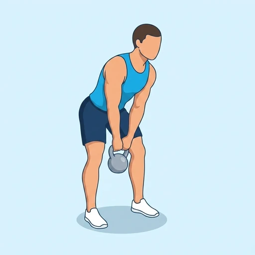
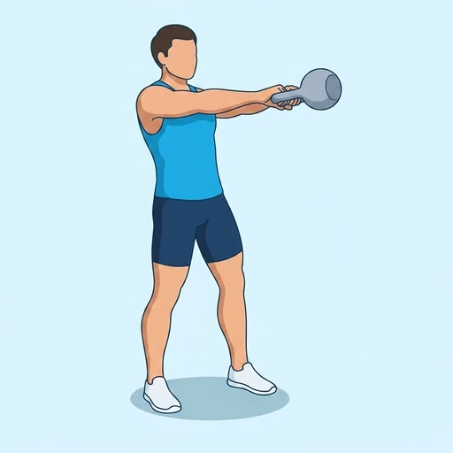

Kettlebell Swing
An explosive hip-hinge movement using a kettlebell for power and conditioning.
Upper legs · Kettlebell · Intermediate


Muscles worked by the Kettlebell Swing
Primary
Secondary
Also called: glute, glutes, gluteus maximus, buttocks, butt, hamstring.
Equipment
Also called: kb, cast iron kettlebell, competition kettlebell, girya.
How to do the Kettlebell Swing
- Stand with feet shoulder-width apart, kettlebell on the floor in front.
- Hinge at the hips, grip the kettlebell, and hike it back between your legs.
- Explosively drive your hips forward to swing the kettlebell to chest height.
- Let the kettlebell swing back between your legs.
- Repeat in a fluid motion.
Form tips
- Power the swing with your hips, not your arms or shoulders.
- Treat it as a hinge, not a squat, with minimal knee bend.
- Finish each rep standing tall with glutes squeezed and core tight.
At a glance
| Body part | Upper legs |
|---|---|
| Category | Strength |
| Force type | Dynamic |
| Mechanic | Compound |
| Difficulty | Intermediate |
| Equipment | Kettlebell |
| Goals | Power, Endurance |
| Tags | Leg day, Shoulder safe, Knee safe |
| MET | 8.0 (metabolic equivalent, for calorie estimates) |
| Unilateral | No |
| Bodyweight | No |
| Dataset id | kettlebell-swing |
Kettlebell Swing in German & Spanish
| German | Kettlebell-Swing |
|---|---|
| Spanish | Swing con pesa rusa |
Descriptions, instructions and tips ship in all three languages in the JSON.
Related exercises
Exercise data (JSON)
The record below is exactly what exercises.json ships for this exercise — names, descriptions, instructions and tips in English, German and Spanish.
{
"id": "kettlebell-swing",
"name_en": "Kettlebell Swing",
"name_de": "Kettlebell-Swing",
"name_es": "Swing con pesa rusa",
"description_en": "An explosive hip-hinge movement using a kettlebell for power and conditioning.",
"description_de": "Eine explosive Hüftschangierbewegung mit dem Kettlebell für Kraft und Kondition.",
"description_es": "Un movimiento explosivo de bisagra de cadera con pesa rusa para potencia y acondicionamiento físico.",
"category": "strength",
"force_type": "dynamic",
"mechanic": "compound",
"difficulty": "intermediate",
"equipment": "kettlebell",
"body_part": "upper_legs",
"primary_muscles": [
"gluteus_maximus",
"hamstrings"
],
"secondary_muscles": [
"erector_spinae",
"quadriceps"
],
"goals": [
"power",
"endurance"
],
"tags": [
"leg_day",
"shoulder_safe",
"knee_safe"
],
"variation_group": "kettlebell-swing",
"is_unilateral": false,
"is_bodyweight": false,
"instructions_en": [
"Stand with feet shoulder-width apart, kettlebell on the floor in front.",
"Hinge at the hips, grip the kettlebell, and hike it back between your legs.",
"Explosively drive your hips forward to swing the kettlebell to chest height.",
"Let the kettlebell swing back between your legs.",
"Repeat in a fluid motion."
],
"instructions_de": [
"Steh schulterbreit, Kettlebell auf dem Boden vor dir.",
"Hüfte beugen, Kettlebell greifen und zwischen die Beine nach hinten schwingen.",
"Hüfte explosiv nach vorne drücken, um das Kettlebell auf Brusthöhe zu schwingen.",
"Kettlebell zwischen die Beine zurückschwingen lassen.",
"In einer fließenden Bewegung wiederholen."
],
"instructions_es": [
"Párate con los pies a la anchura de los hombros y la pesa rusa en el suelo por delante.",
"Bisagra en las caderas, agarra la pesa rusa y llévala hacia atrás entre las piernas.",
"Extiende las caderas de forma explosiva para balancear la pesa rusa hasta la altura del pecho.",
"Deja que la pesa rusa vuelva a balancearse entre las piernas.",
"Repite en un movimiento fluido."
],
"tips_en": [
"Power the swing with your hips, not your arms or shoulders.",
"Treat it as a hinge, not a squat, with minimal knee bend.",
"Finish each rep standing tall with glutes squeezed and core tight."
],
"tips_de": [
"Erzeuge den Schwung aus der Hüfte, nicht aus den Armen.",
"Halte den Rücken gerade, wenn die Kettlebell zwischen die Beine schwingt.",
"Spanne Gesäß und Bauch im höchsten Punkt fest an."
],
"tips_es": [
"La fuerza nace de la cadera, no de los brazos.",
"Aprieta glúteos y abdomen en la parte alta del swing.",
"Es una bisagra de cadera, no una sentadilla."
],
"met": 8.0,
"images": {
"flat": {
"start": "images/flat/kettlebell-swing-start.webp",
"peak": "images/flat/kettlebell-swing-peak.webp"
}
}
}Fetch just this exercise
const { exercises } = await fetch(
"https://exercise-dataset.com/exercises.json"
).then(r => r.json());
const ex = exercises.find(e => e.id === "kettlebell-swing");Free for personal and commercial in-app use with attribution (“Exercise data by RepDB”) — see the license and ready-made attribution snippets. Redistributing the data as a dataset or API is not permitted.